Source: Hugging Face - MMIMDb Dataset
The project utilizes the MMIMDb (Multi-Modal IMDb) dataset, a benchmark for multimodal classification tasks. The objective is to predict movie genres based on both visual information (movie posters) and textual information (plot summaries).
plot attribute
provides a concise summary of the movie's content.
images attribute
contains the official movie posters.
Action, Adventure, Animation, Biography, Comedy, Crime, Documentary, Drama, Family, Fantasy, Film-Noir, History, Horror, Music, Musical, Mystery, News, Reality-TV, Romance, Sci-Fi, Short, Sport, Talk-Show, Thriller, War, Western.
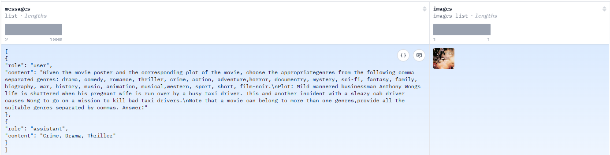
Preview of the MMIMDb dataset structure showing plots and posters.
To understand the complexity of the MMIMDb dataset, we conducted a comprehensive analysis across two key dimensions: Label and Textual Semantic Analysis and Visual Feature Analysis.
What:
Examine the number of samples in each genre to detect imbalanced labels in the MMIMDb multi-label dataset.
Why:
Class imbalance can bias predictions toward dominant genres like Drama and Comedy, reducing performance for rare classes.
How:
Count each genre frequency, sort descending, and plot a bar chart to reveal the long-tail distribution.
The chart illustrates a significant long-tail class imbalance, where a few majority classes dominate the dataset.
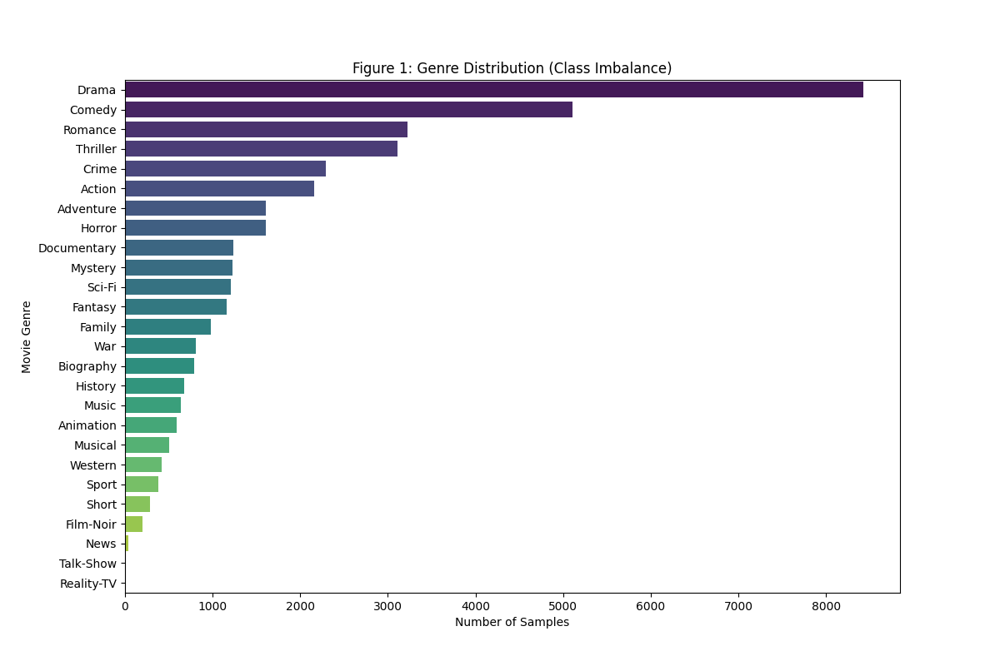
Figure 1: Distribution of samples across 26 movie genres, highlighting the class imbalance.
What:
Analyze how many labels each movie has to understand label overlap in multi-label classification.
Why:
The number of labels per sample indicates output complexity and helps tune decision thresholds.
How:
Compute labels-per-movie counts, then visualize their frequencies to identify dominant combinations.
MMIMDb is inherently multi-label. Most movies are associated with 2 to 3 genres simultaneously.
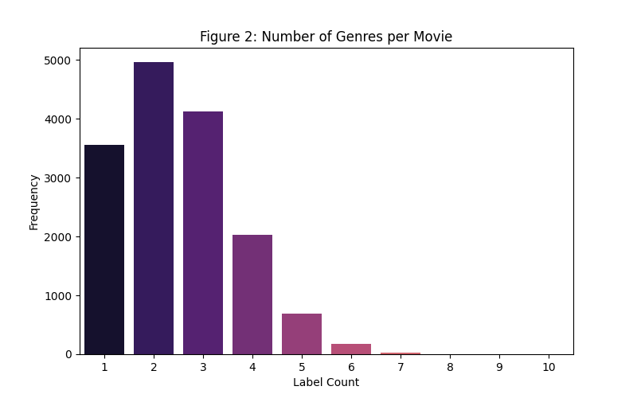
Figure 2: Frequency of the number of labels assigned per movie.
What:
Measure how often genre pairs appear together across all samples.
Why:
Correlation patterns expose semantic dependencies that improve joint embedding and multi-label prediction.
How:
Build a co-occurrence matrix from one-hot labels and render a heatmap to identify frequent genre pairs.
The correlation matrix visualizes how genres frequently appear together and supports the Joint Embedding strategy.
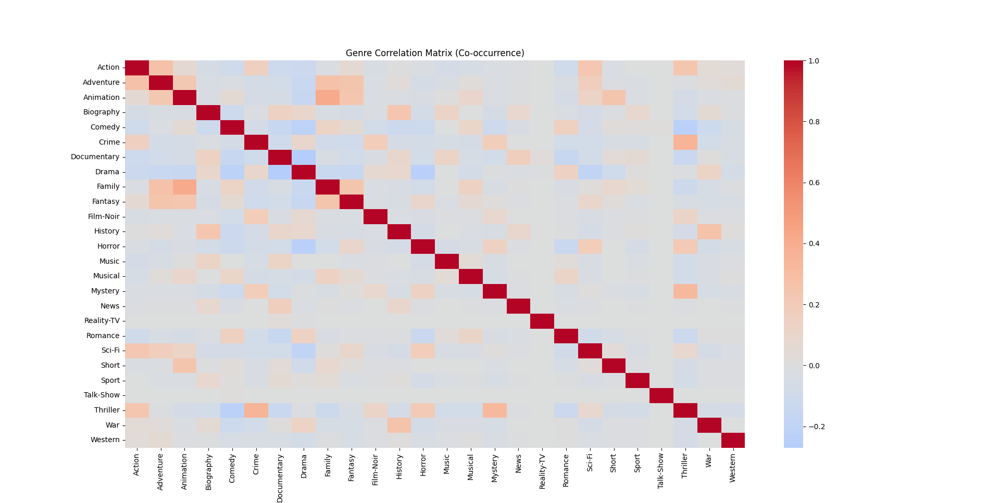
Figure 3: Heatmap illustrating the co-occurrence patterns between genres.
What:
Inspect movie plot lengths to understand textual context distribution.
Why:
Length statistics guide tokenizer settings so meaningful context is preserved while controlling compute cost.
How:
Count words per plot, visualize the distribution, and choose
an appropriate tokenizer max_length.
We analyzed the word count distribution of movie plots to
choose a suitable max_length for DistilBERT.
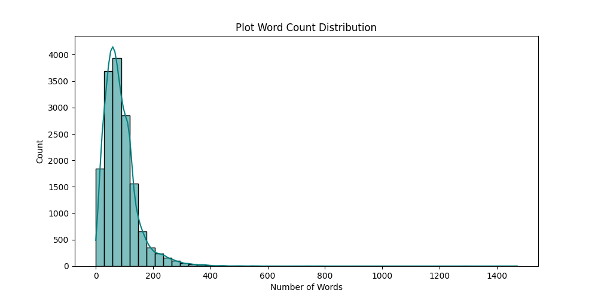
Figure 4: Distribution of word counts in movie plot summaries.
What:
Analyze image width and height distribution across the dataset.
Why:
Helps select a robust resize strategy for model training.
How:
Extract dimensions from each image and plot Width vs Height scatter.
The dataset exhibits high variance in image resolutions, with dimensions ranging from small thumbnails to high-definition posters exceeding 10,000 pixels.
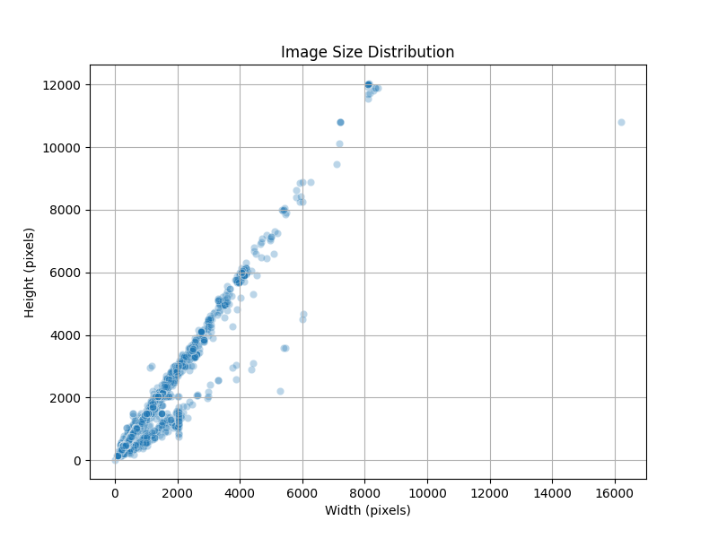
Figure 5: Distribution of image dimensions (Width vs. Height) in the dataset.
What:
Measure image file-size distribution in KB.
Why:
Supports storage planning and preprocessing performance optimization.
How:
Compute file sizes and plot a histogram to observe skewness.
The plot reveals a heavily right-skewed dataset where the vast majority of movie posters are small, typically under 1,000 KB.
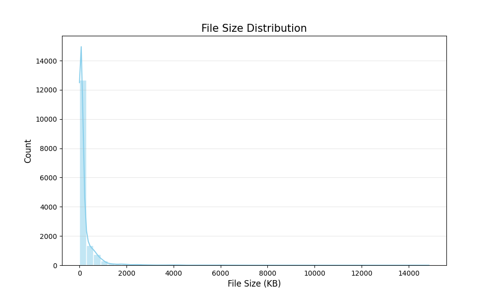
Figure 6: Distribution of file sizes in the dataset.
What:
Inspect width/height ratio for all posters.
Why:
Ensures resizing and augmentation preserve visual structure.
How:
Calculate ratio per image and plot density/histogram.
The chart shows a prominent peak concentrated around 0.75, confirming that the vast majority of images follow the standard 3:4 portrait orientation typical of movie posters. While there are minor occurrences of square (1:1) and landscape formats, the sharp vertical concentration indicates high structural consistency across the dataset.
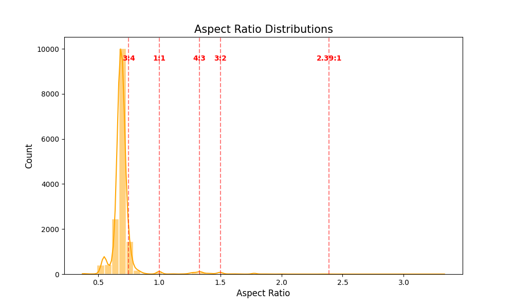
Figure 7: Distribution of aspect ratios in the dataset.
What:
Analyze average RGB channel intensity patterns.
Why:
Reveals color bias that may affect model generalization.
How:
Compute channel means and visualize channel relationships.
The scatter plot illustrates a diverse range of chromatic features across the dataset, with a dense clustering of pixels along the diagonal axis indicating a strong correlation between color intensity and brightness.
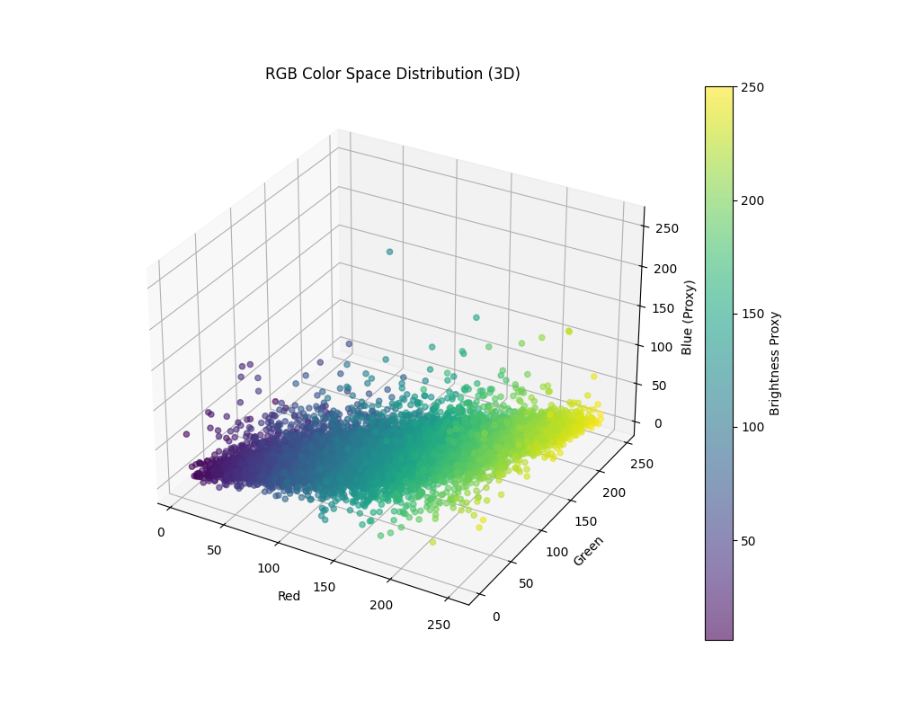
Figure 8: Distribution of RGB color space in the dataset.
What:
Evaluate sharpness and contrast for visual quality assessment.
Why:
Low-quality images can reduce feature extraction reliability.
How:
Use Laplacian variance and grayscale standard deviation metrics.
The scatter plot demonstrates a positive correlation between image sharpness and contrast, suggesting that higher-quality posters tend to feature well-defined edges and distinct tonal variations.
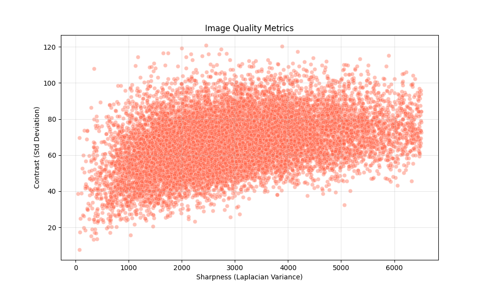
Figure 9: Distribution of image quality metrics in the dataset.
We first downloaded the MMIMDb dataset from Hugging Face and localized it into structured files on our machine (poster images + metadata CSV).
To make training stable and reproducible, we saved the
processed dataset into a local CSV named
mmimdb_metadata.csv. This file stores essential
fields used by the custom dataset class.
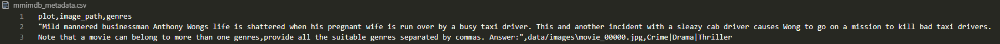
Preview of mmimdb_metadata.csv showing plot
text, local image paths, and multi-label genre strings.
In this initial stage, the system retrieves and structures the raw information required for multimodal learning.
Raw inputs are transformed into numerical tensors through tokenizer and image processor modules, ensuring compatibility with multimodal backbones and stable batch training.
Convert images of different resolutions into a uniform format for efficient batch processing.
Objective: Ensure all samples produce
consistent image tensors with shape (N,3,224,224).
224x224 (ViT-compatible resolution).
AutoImageProcessor converts image into
pixel_values tensors.
max_length=128,
truncation, and max-length padding.
MultiLabelBinarizer.
We apply a deterministic 80/10/10 split to separate optimization, tuning, and final evaluation.
# 80/10/10 split
train_df, temp_df = train_test_split(df, test_size=0.2, random_state=42)
val_df, test_df = train_test_split(temp_df, test_size=0.5, random_state=42)
print(f"Train samples: {len(train_df)} - Val: {len(val_df)} - Test: {len(test_df)}")
# Output: 12441 / 1555 / 1556
Image normalization is automatically managed by the
AutoImageProcessor from the
google/vit-base-patch16-224-in21k
checkpoint, ensuring that the visual input remains strictly
aligned with the pre-trained Vision Transformer (ViT)
expectations.
>>> Reading metadata...
Train samples: 12441 - Val: 1555 - Test: 1556
Number of target classes: 26
>>> Initializing Tokenizer and ImageProcessor...
>>> DataLoaders ready! (778 batches total)
First Batch Verification:
- Input IDs shape: torch.Size([16, 128])
- Pixel Values shape: torch.Size([16, 3, 224, 224])
- Labels shape: torch.Size([16, 26])The backbone is responsible for extracting high-dimensional semantic representations from each modality (image and text) before they are passed to the classification head. The backbone architecture differs across the three experimental settings.
In every setting (Zero-Shot, Few-Shot, and Full Fine-Tune), we run a controlled comparison across three modality variants: Text-Only, Image-Only, and Multimodal (Text + Image).
A single unified multimodal model is used as the backbone, handling both image and text feature extraction simultaneously.
CLIPModel — checkpoint
openai/clip-vit-base-patch32.
model(**inputs) to retrieve embeddings.
The same CLIP model is reused but restructured as a fixed feature extractor feeding a trainable linear classifier.
CLIPModel — checkpoint
openai/clip-vit-base-patch32.
self.clip.vision_model (image) and
self.clip.text_model (text) are accessed
separately.
param.requires_grad = False is applied to all
CLIP parameters. Only the downstream
nn.Sequential classifier is trained.
Two separate backbone models from different model families are used — one for each modality — and both are fully updated during training.
distilbert-base-uncased) loaded via
AutoModel.
google/vit-base-patch16-224-in21k) loaded via
ViTModel.
model.parameters() is passed directly to the
optimizer, so all weights of both DistilBERT and ViT are
updated to specialize on MM-IMDb.
[CLS] token
of DistilBERT and the pooled output of ViT are concatenated
and forwarded to the multi-label classification head.
The head maps extracted features to 26 multi-label logits and uses a strategy-specific training setup for each mode.
For each strategy, the same evaluation protocol is applied to three variants: Text-Only, Image-Only, and Multimodal (Text + Image), so the head behavior can be compared fairly across modalities.
The "Head" in the zero-shot configuration is a non-parametric feature comparator. It leverages CLIP’s pre-trained joint latent space to perform classification by measuring the semantic alignment between inputs and label descriptions without any weight updates.
Backbone features are frozen and only the lightweight classifier is trained with BCEWithLogitsLoss.
torch.sigmoid(logits) > 0.2.
In this strategy, both backbone transformers (DistilBERT and
ViT) and the classification heads are trained simultaneously
using a low learning rate (2e-5) to adapt to the
MM-IMDb domain.
[CLS] representation from both models:
last_hidden_state[:, 0, :]
(768-dim)
last_hidden_state[:, 0, :]
(768-dim)
nn.Linear(768, C) layer.
768 + 768 = 1536).
Linear(1536 → 512) → ReLU → Dropout(0.2) → Linear(512 →
C)
BCEWithLogitsLoss; predictions are generated with
torch.sigmoid(logits) > 0.5.
This section reports the actual validation outputs collected from our three training strategies under the same modality comparison setup (Text-Only, Image-Only, Multimodal).
| Mode | Micro-F1 | Macro-F1 | Subset Acc | Hamming Acc |
|---|---|---|---|---|
| Image-Only | 0.2022 | 0.1761 | 0.0120 | 0.8519 |
| Text-Only | 0.3062 | 0.2169 | 0.0120 | 0.8484 |
| Multimodal | 0.3219 | 0.2695 | 0.0120 | 0.8742 |
Multimodal fusion provides a robust baseline by effectively combining pre-trained visual and textual knowledge without any task-specific training.
| Mode | Micro-F1 | Macro-F1 | Subset Acc | Hamming Acc |
|---|---|---|---|---|
| Image-Only | 0.5434 | 0.3216 | 0.1096 | 0.9147 |
| Text-Only | 0.5422 | 0.3165 | 0.0694 | 0.9047 |
| Multimodal | 0.5908 | 0.3994 | 0.1318 | 0.9222 |
Linear probing on just 5% of data nearly doubles performance, proving that a lightweight MLP head can rapidly map CLIP features to the movie genre domain.
| Mode | Micro-F1 | Macro-F1 | Accuracy |
|---|---|---|---|
| Text-Only | 0.6293 | 0.4742 | 0.2103 |
| Image-Only | 0.4248 | 0.1200 | 0.1158 |
| Multimodal | 0.6624 | 0.4846 | 0.2141 |
End-to-end optimization of specialized Transformers (DistilBERT & ViT) achieves peak accuracy, confirming that full parameter updates are essential for complex multi-label tasks.
To gain a deeper understanding of the model's limitations, we performed both quantitative and qualitative error analyses on the validation set. We specifically focused on "Critical Failures," defined as samples where the Jaccard Similarity (the overlap between predicted and true genres) was below 0.2.
Based on our evaluation of the validation set (approximately 1,520 samples):
We analyzed a representative case of critical failure to understand the interplay between textual and visual features.
| Attribute | Value |
|---|---|
| Sample ID | 2 |
| Image | data/images/movie_05706.jpg |
| Plot | The story of how Eun-jin (Eun-kyung Shin) became a legend in the South Korean underworld by defeating an army of gangsters... |
| Ground Truth Genres | Action Comedy Romance |
| Predicted Genres | Action Crime Drama Thriller |
| Top Confidence Scores |
Drama: 92.62% | Crime: 89.91% | Action: 78.07%
|
Analysis of Failure Modes:
A striking finding was the model's high confidence in its errors. In the case above, the model predicted Drama with a confidence score of 92.62%, despite it being incorrect.
Modern architectures trained with BCE Loss tend to be "over-confident." The loss function penalizes the model if it doesn't push probabilities toward 1 or 0, leading to aggressive maximization of a class if a single strong feature (like the word "gangster") is detected.
Drama appears in nearly 50% of the MMIMDb dataset. The model learns that predicting "Drama" for any narrative with emotional weight is a statistically safe bet, leading to a systemic bias toward this label with high certainty.
The following visualizations illustrate the distribution of errors across genres and the density of critical failures:
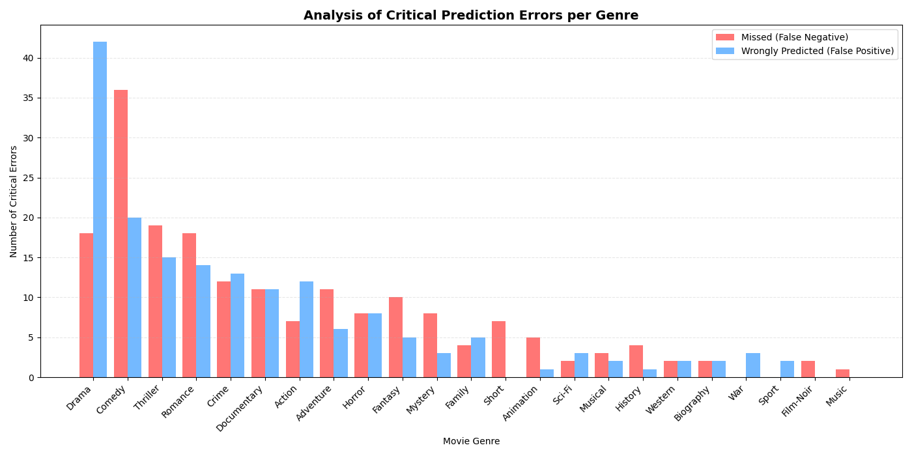
📊 Fig 4.4a: Analysis of Critical Prediction Errors by Genre
Comedy, Thriller, and Romance show the highest False Negatives. These genres rely on subtle emotional and narrative cues that the late-fusion approach struggles to capture.
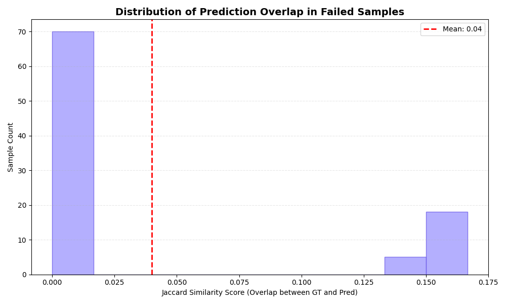
📈 Fig 4.4b: Distribution of Prediction Overlap in Failed Samples
Many critical errors fall within the 0.0 - 0.1 Jaccard score range, representing complete prediction failures where one modality's misleading signals overpower the other's correct cues.
To demonstrate the practical application of our fine-tuned multimodal architecture, we performed an inference test using the 2014 film Interstellar. This case highlights the model's ability to synthesize complex information across two distinct modalities.
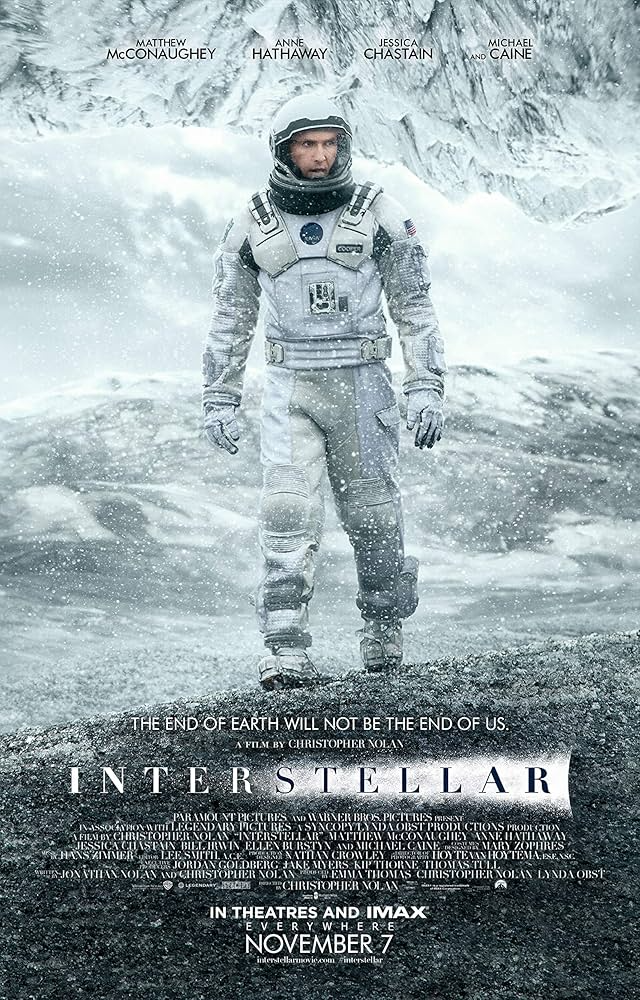
In a near-future where a global crop blight and second Dust Bowl are slowly rendering the planet uninhabitable, Joseph Cooper, a widowed farmer and ex-NASA pilot, is recruited for a top-secret mission. Alongside a team of researchers, he travels through a newly discovered wormhole near Saturn to find a new home for humanity in a distant galaxy. As they navigate planets with extreme time dilation and massive tidal waves near a supermassive black hole, Cooper must struggle with the emotional toll of leaving his children behind and the scientific mystery of the Tesseract to save the human race from extinction.
The model processes the image through the Vision Transformer (ViT) and the text through DistilBERT, concatenating the features for a final multi-label classification.
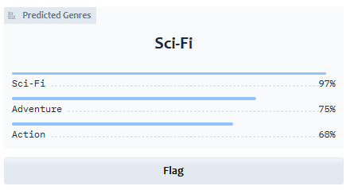
| Metric | Results |
|---|---|
| Top 3 Predicted Genres | Sci-Fi (0.97) Adventure (0.75) Action (0.68) |
| Ground Truth | Adventure, Action, Sci-Fi |
| Jaccard Similarity | 1.0 (Perfect Match) |
The 2016 Vietnamese film Nắng (The Little Girl) is a poignant comedy-drama centered on the profound bond between Mưa, a mother with a mild cognitive disability, and her bright, precocious 7-year-old daughter, Nắng. Living a humble life in a small shack and earning a meager living by collecting scrap and selling lottery tickets, their world is upended when Mưa is framed for a drug trafficking crime she does not understand. As she faces the death penalty, a colorful cast of "outcast" neighbors—including a reformed gangster and a runaway youth—unite to prove her innocence. The story serves as a heart-wrenching exploration of unconditional maternal love, social justice, and the strength of a "found family" in the face of overwhelming odds.
The model processes the image through the Vision Transformer (ViT) and the text through DistilBERT, concatenating the features for a final multi-label classification.
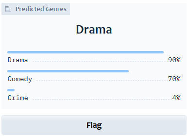
| Metric | Results |
|---|---|
| Top 3 Predicted Genres | Drama (0.90) Comedy (0.70) Crime (0.04) |
| Ground Truth | Adventure, Action, Sci-Fi |
| Jaccard Similarity | 1.0 (Perfect Match) |
The complete implementation of this multimodal classification project is available on GitHub:
In this assignment, we developed and evaluated multiple approaches for movie genre classification using the MMIMDb dataset, ranging from zero-shot multimodal heuristics to full end-to-end fine-tuning of Vision Transformer (ViT) and DistilBERT architectures.
The fully fine-tuned fusion model (Micro-F1: 0.6624) significantly outperformed the best Zero-shot baseline (Micro-F1: 0.3219).
This confirms that movie genres are often metaphorical and context-dependent, requiring the deep parameter updates of specialized Transformers to capture nuanced relationships that general-purpose alignments miss.
By training on only 5% of the data (622 samples), the Few-Shot Linear Probe achieved 89% of the performance of the full fine-tuned version (Micro-F1: 0.5908).
This demonstrates a highly cost-effective strategy for labeling niche cinematic databases where large-scale human annotation is not feasible, yet high precision is required.